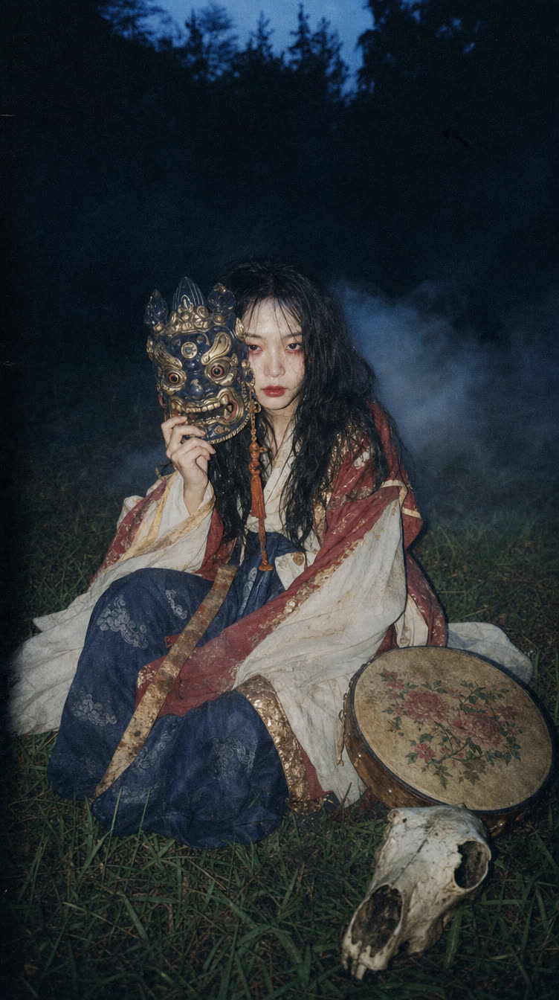

— 강원도, 이름 없는 산 중턱 —
지도에도 나오지 않는 이 산사(山寺)를,
당신이 찾아온 것은 우연이 아니다.
발밑에서 젖은 흙냄새가 올라온다.
계단 끝, 낡은 문 하나.
문틈으로 촛불이 새어 나오고 있다.
…안에서, 누군가 방울을 흔든다.
…망설이는 사이, 문이 저절로 열렸다.
"기다리고 있었다."
촛불 너머, 가면을 쥔 여인이
고개도 들지 않고 말한다.
"이 산에서 여든세 번째다, 내가.
너 같은 얼굴… 수천 번은 봤지."
"알다 뿐이냐.
허나 네 손으로 적어야 시작된다."
"이름이 무엇이냐."
…이름을 말해야 한다.
"태어난 날을 적거라.
해와 달과 날— 하나도 빠짐없이."
…여덟 자리로 말하거라. (예: 1995.03.14)
"마지막이다."
여인이 만세력을 펼친다.
낡은 종이 위로 붓이 멈추지 않는다.
"……"
"심상치 않군."
처음으로, 여인이 고개를 들어
당신을 똑바로 본다.
"그렇게로구나…"
"그래서 안 된 거였구나."
여인이 천천히, 가면을 쓴다.
공기가— 일렁이기 시작한다.
"네 사주에 살(殺)이 박혀 있다."
가면 너머의 목소리가
방 전체를 울린다.
"운이 나빴던 게 아니야.
흐름을 모르고 살았던 것뿐이지."
"보여주랴 —
네 인생이 안 풀리는 진짜 이유."

— 심곡사 살(殺) 감정 —
네 사주,
심상치 않다
"여든세 번째 무녀로서 말한다.
지금부터— 네 원국(原局)이다."

붉은 표식 — 살(殺)이 뿌리내린 자리
잠긴 기둥은, 풀이에서 전부 열어 주마
네 원국에서 나온
2개의 흉살
* 살이 움직이는 해, 강도, 다스리는 법—
전부 적어 뒀다. 풀이에서 열어 봐라.
"왜 이렇게
뭘 해도 안 풀리지?"
사주 속 흉살(凶殺)이
네 운을 가로막고 있다.
- 사람을 쉽게 믿었다가, 꼭 데이고
- 애는 네가 쓰는데, 인정은 남이 받고
- 미루면 놓치고, 결정하면 이미 늦고
- 시작만 하면, 꼭 변수가 터지고
- 열심히 사는데— 인생은 멈춰 있고
"운이 나빴다"고 넘겨 왔겠지.
아니야.
흐름을 모르고 있었을 뿐이다.
살(殺)은—
감당 못 하면
너를 갉아먹는 재앙이지만,
감당해 내면
하늘이 내린 기회다.
네가 외면해 온,
사주 속 뒷 이야기.
정면으로 마주하고— 풀어라.
숲 속 깊은 산사, 심곡사
여든세 번째로
산을 지키는 무녀, 묘담
강원도 이름 없는 산 중턱,
83대째 만세력과 신살(神殺)의 기록을
지켜 온 집안.
12년,
5,000명의 사주를 풀었다.
신점(神占)이 아니다.
정통 명리학 · 만세력 기반의 사주 풀이다.
사주팔자 명리심리상담사 1급
부부심리상담사 1급
풀이 미리보기 · 壹
"돈이 한 번 크게
터지는 팔자던데."
재물이 폭발하는 해와, 줄줄 새는 해.
정확한 연도는— 풀이에서 보여주마.
풀이 미리보기 · 貳
"이미 다
적어 뒀다."
네 원국을 보고 전부 적어 뒀다.
열람만 잠겨 있을 뿐.
진짜 성격과 숨겨진 열등감
겉으로는 무던한 척 살아왔지만 정작 당신의 일간은 스스로를 갉아먹는 방향으로 기울어 있으며 그 뿌리는 어린 시절의…
평생 만져볼 돈의 최대치
재성의 흐름이 대운과 맞물리는 구간이 두 번 존재하며 그 정점은 당신의 나이로 계산했을 때 대략…
옆에 붙어야 할 귀인 구별법
당신의 원국은 특정 오행을 가진 사람에게 유독 쉽게 흔들리는 구조라서 지금까지 만난 인연 중에서도…
보상이 터지는 대운의 시기
지금의 정체기는 당신 탓이 아니라 대운의 골짜기 구간이며 이 골짜기를 빠져나가는 정확한 시점은…
진짜 인연의 프로필
만나는 시기, 방향, 직업군, 첫인상까지 — 당신의 배우자 자리를 채울 사람의 윤곽은 이미 원국 안에…
묘담의
3단 심층 살풀이
언제, 어떻게 움직이는지
* 가려진 자리는 풀이에서 열린다.
뿌리부터, 다스리는 법까지
귀문관살 (鬼門關殺)
12신살 중 사람의 마음 자체를 노리는 가장 미묘한 살.
까닭 없는 불면과 예민함으로 작동한다.
— 네게 유독 위험한 이유
— 다스리는 방위·시간대·물건까지
하나하나 짚어 주마.
살풀이, 그 이후
풀기 전
새벽 3시까지 잠 못 들고 화면만 내리는 밤. 같은 결의 사람에게 휘둘리고, 끝내고, 자책하는 패턴이 굳는다.
풀고 난 후
같은 예민함이 직관과 통찰로 바뀐다. 언제 멈추고 언제 나아갈지— 흐름을 아는 자의 선택은 다르다.
* 심곡사의 살풀이는 굿·부적 판매가 아닌,
명리학 신살론(神殺論)에 근거한 서면 분석입니다.

네가 받을 것
100페이지,
운명 사용설명서
네 이름이 적힌, 단 한 권의 기록.
평생 소장하는 PDF 상세 분석서.
살을 마주한 뒤
그들에게 일어난 일
짓누르던 게 확실히 사라진 느낌이에요. 이제는 잠드는 게 안 무서워요. 다른 곳은 단어가 어려웠는데, 풀이가 어렵지 않게 되어 있어서 이해도 쉬웠고요.
20대부터 안 풀렸던 이유를 쫙 알려주는데… 자극적이지 않게, 마음 상하지 않게 설명해 주셔서 위안이 됐어요. "이래서 그랬구나" 싶었습니다.
불신 가득이었다가 레포트 받고 처음으로 소름 돋았어요. 40만원 주고 봤던 대면 상담이랑 똑같네요. 진작 여기서 볼걸…
* 실제 상담 후기를 재구성한 예시입니다.
불안할 때마다
점집 찾고, 부적 쓰고,
굿까지…
점집 –15만원 · 부적 –55만원 · 굿 –120만원
수백만 원, 쓸 필요 없다.
집에서 받는 맞춤형 살풀이
기간 한정, 특별 혜택가
- 약 100페이지 상세 분석서 (PDF, 평생 소장)
- 흉살 분석 + 대운·세운 흐름 + 직업·재물·인연·건강
- 추가 질문 무제한
- 2인 이상 신청 시 궁합 분석 무료
🌟 실제 신청자 10명 중 9명은 심층 풀이를 선택합니다.
군말 없는 100% 환불 보장
풀이가 불성실하다고 느끼시면, 이유를 묻지 않고
전액 환불해 드립니다.
신청 후 24시간 이내, 이메일로
「운명 사용설명서」가 도착합니다.
❌ 신점·대면·전화 없음 · ⭕ 전통 명리학 기반 서면 풀이